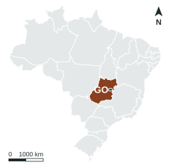
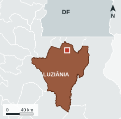

Conjunto de Habitação de Interesse Social · Parque JK, Luziânia-GO


Luziânia cresceu cerca de 20% entre 2010 e 2022, com renda baixa: salário médio formal de 2,0 salários mínimos e renda per capita de 0,67 SM. O principal motivo do déficit é o aluguel que compromete a renda. O Minha Casa Minha Vida local repete uma só tipologia de 2 quartos, de 36 a 47 m², embora os domicílios tenham 2,89 moradores em média e 23% da população tenha até 14 anos. O conjunto propõe seis tipologias, para famílias de tamanhos diferentes.
Área de 4.496,61 m² na Av. José Rodrigues dos Reis, junto a uma via arterial, a 1,9 km da BR-040, em quadras ainda pouco ocupadas. A UniRV (campus Luziânia, Av. Sara Kubitschek) fica relativamente perto e tem impulsionado novos condomínios e comércios no entorno. Escola municipal a 800 m e supermercado a 1,3 km; creche (CMEI) a 2,0 km, faculdade a 2,6 km e Hospital Estadual a 3,6 km, em linha reta. Nenhuma UBS nas bases consultadas.